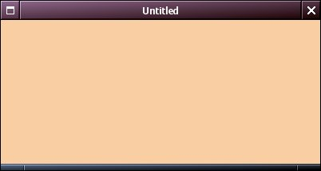

| LAST: Step 1 Drawing a Window | Contents | NEXT: Step 3 Adding Widgets |
Every widget can process events if it wants to. An event is a structure with information, which is created by the X-server, when certain things happen, such as a mouse click, a pressed key, or the raising of a window. These Xevents are queued. You can select for a window or widget, which events, sent by the X-server, you want it to use. The other events will be ignored. The widget takes these events out of the queue. You must specify which function will be executed for which event. In our FirstWindow application, we have not done anything of this kind.
In the FirstWindow application, the WMScreenMainLoop(screen) call puts the application into a loop to wait for events. We had not specified any events to be processed, however, and the application does not react to the event that you told the window manager to close it by clicking on the close button. For this, there is an easy fix. It is the function
void WMSetWindowCloseAction (WMWindow *window, WMAction *action, void *clientData)
This should be called after the window's creation and before its mapping with WMMapWidget(). The argument WMAction must be a function, which looks like this:void action(WMWidget *self,void *data){ commands}.
It is automatically called when the window is closed. Typically, it handles the data, it destroys the widget where the CloseAction event arrived, in this case our only window. In our simple programme, we would simply exit the application. If there can be more than a single window, we should keep track of their number, and exit only if we are on the last window (if we wish to do so). Widgets are deleted by void WMDestroyWidget (WMWidget *widget) Now , to the FirstWindow code, we can, somewhere before the main function, define this function:
void closeAll(WMWidget *self,void *data){
WMDestroyWidget(self);
fprintf(stderr, "I've been used!\n");
exit(0);
}
WMCreateWindow() line, we insert the line:
WMSetWindowCloseAction(window, closeAll, NULL);Compile it. The source code now looks like this. Do the experiments above again. In Windowmaker the close button now is enabled. In the other window managers, the error messages have disappeared, and our function lets us know it has been used.
The title bar reads "untitled", because we have not used WMSetWindowTitle. The destroy-button now is enabled, however. The colour was created by the red, green, and blue values : 124<<9, 206<<8, and 162<<8.
WMSetWindowCloseAction() hides many details. Suppose we like to close the window and end the application in a different way. We can use the same closeAll function as above for this. We are going to close the window whenever there is a mouse click in it. When there is a click, the system notifies the window that there is an X-event "ButtonPress". To use this, we must specify which events we want to use for the window, and specify which function will be called in case such an event arrives. The function to do this, is void WMCreateEventHandler (WMView *view, unsigned long mask, WMEventProc *eventProc,void *clientData).void eventProc(XEvent *event, void *data). The clientData is our window to which we like to give access for these events. (WMView *) is a member in the WMWidget structure. It can be obtained from the window by the function WMWidgetView(WMWindow *window).
Now, insert the following function after our closeAll function in the programme
static void handleEvents(XEvent *event, void *data)
{
WMWidget *widget = (WMWidget*)data;
switch (event->type) {
case ButtonPress:
closeAll(widget,NULL);
break;
}
}
ButtonRelease. Usually we define functions for all the event types which we have specified by the mask in the WMCreateEventHandler function. Now, after the line with WMCreateWindow(), insert the following line in our programme:
WMCreateEventHandler(WMWidgetView(win), ButtonPressMask,handleEvents, win)
| LAST: Step 1 Drawing a Window | Contents | NEXT: Step 3 Adding Widgets |